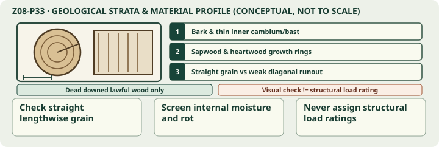

Z08-P33 · Rocks, minerals and materials · New manuscript
Wood Density, Grain Direction and Moisture Content Screening
Evaluate dead downed wood properties—density, straight grain, and moisture—without certifying structural capacity or cutting live trees.
When it applies · Upper Midwest forest material assessment for camp tasks and educational wood study.
Equipment · Visual inspection, fingernail press screen, lawful dead-downed wood only.

Actions
- Inspect naturally broken or end-grain surfaces of dead downed wood to assess growth-ring spacing, grain straightness, and freedom from rot.[R15]
- Distinguish dry sound wood from damp or punky wood by weight, clean dry shavings, and resistance to crumbling under gentle fingernail pressure.[R15]
- Separate visual grain screening from structural certification; never trust wild branches for overhead climbing, hoisting, or unverified load-bearing spans.[R15, K06]
Failure recognition · Selecting heavy green wood, rain-soaked branches, or cross-grained limbs causes sudden snapping and poor combustion or tool failure.[R15]
Verify · Selected dead downed wood is dry, sound, straight-grained, lawfully gathered, and restricted to non-load-rated tasks.[R09, R15]
Stop or change course · Stop cutting live trees or using cracked, hollow, insect-riddled, or punky wood for any load or tool task.[R09, R15]
Evidence and editorial notes
- K06 · NPS · Forces and Tools (current web edition)
- Section: Forces and Tools > Simple Machines and Mechanical Advantage · Conditions: Levers, wedges, inclined planes and friction mechanisms
Support: Simple machines trade force for distance (levers, wedges, pulleys); friction, alignment and material strength limit real-world output below ideal ratios.
Limitations: Ideal mechanical advantage ignores friction losses and breaking strength of ropes or anchors. · Conflicting evidence: None; clarifies physical trade-offs without implying engineered load ratings.
Editorial note: Anchors mechanical-advantage, wedge-splitting and pulley/rigging limit cards. · Specialist reviewer: Mechanical engineering and rigging safety
Primary source · checked 2026-11-24 - R09 · Minnesota DNR · Minnesota State Park Rules and Resource Collecting Restrictions (Current web edition)
- Section: State park natural-feature protection · Conditions: Minnesota State Parks and Recreation Areas
Support: Removing rocks, minerals, soil, or live vegetation from Minnesota State Parks is prohibited to protect natural resources.
Limitations: Verify jurisdiction boundaries before picking up specimens even along shorelines or trails. · Conflicting evidence: None noted.
Editorial note: Bounds state-park material collection. · Specialist reviewer: Minnesota DNR resource manager
Primary source · checked 2026-11-25 - R15 · Minnesota DNR · Native Trees of Minnesota Identification Reference (Current web edition)
- Section: Regional wood species, grain, bark, and moisture variability · Conditions: Dead downed wood and natural bast fibers in Upper Midwest forests
Support: Wood density, grain straightness, resin content, and decay state vary widely by species, tree part, and moisture history.
Limitations: Visual grain inspection cannot certify structural load capacity; avoid cutting live trees where prohibited and reject punky or cracked wood. · Conflicting evidence: None noted.
Editorial note: Reconciles B007 wood notes with material limits. · Specialist reviewer: Forestry and wood-science specialist
Primary source · checked 2026-11-25
Source lineage · New manuscript (Z08 P16 wood materials) · Classification · New manuscript.